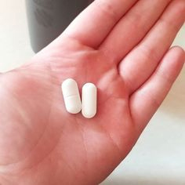

Viziunea masculină
Știința pentru curioși

D-brief
Cosmin Diaconescu: la 50 de ani viața abia începe, cum am reușit să-mi recapăt tinerețea și
sănătatea sexuală!
De Bridget Alex |
Vreau să vă împărtășesc istoria mea ca să nu repetați greșelile mele și să acordați atenție
problemelor cu adevărat importante. Acum mă simt excelent, sunt plin de forțe și energie,
cum nici în tinerețe nu eram! Să o iau de la început.

Câte ceva despre mine.
Am 53 ani. Am absolvit Facultatea de Jurnalism a Universității ”A. I. Cuza” din Iași. Înainte ca
să devin reporter de război, am muncit la redacțiile mai multor ziare. În 2010, în urma unui
accident s-a stins din viață soția mea. La vârsta de 50 de ani am demisionat și m-am mutat la
Brașov.
Eu și soția n-am avut copii, așa că am rămas singur pe lume. Fotografia, hobby-ul meu,
mă ajuta să comunic. Arta fotografică mă pasiona de pe timpul când eram reporter de război. În
cele de urmă, aceasta a devenit sursa mea de existență, eram fotograf de nunți, petreceri și
alte evenimente publice.
La 53 de ani mă simțeam perfect, se întâmpla să mă simt și prost, dar eram sigur că este din
cauza vremii, a dispoziției proaste etc. Nepăsarea m-a făcut să trec cu vederea anumite lucruri,
iar în scurt timp, a devenit un chin să merg la toaletă. Sunt bărbat, totuși, trebuie să fiu
puternic, cred că am stat prea mult pe pământul umed la pescuit. Cu timpul, senzația de durerea
s-a atenuat, dar mai nou- aveam probleme cu erecția. Dimineața nu se mai scula, dacă vedeam o
femeie frumoasă nu mă mai gândeam la sex! ”Sunt, totuși, la o vârstă!”, mi-am zis, împăcându-mă
cu ideea că de acum încolo, fiecare zi va fi identică cu cea precedentă. Privindu-i pe ceilalți
care se bucurau de viață, eu mă pregăteam să-mi duc traiul bătrânesc.
Dar atunci când mă așteptam cel mai puțin, viața mea s-a întors la 180 de grade! Am întâlnit...
o femeie. Era atât de frumoasă, o doream atât de tare, încât nu mă puteam gândi la altceva.
Și acum vine partea interesantă!
Am întâlnit-o la o petrecere la care am fost invitat în calitate de fotograf. Spre uimirea mea,
Adina și-a arătat interesul față de mine. Peste 2 săptămâni am început să ieșim împreună. În
ciuda diferenței semnificative de vârstă, 28 de ani, alături de ea mă simțea tânăr.
Dar s-a întâmplat ceva care a stricat toată idila...
Când a venit timpul să facem dragoste pentru prima dată, a fost groaznic. Altfel spus, m-am
făcut de rușine, partida noastră de sex a durat doar 2 minute. În timpul orgasmului îmi venea să
țip de durere. Adina era nespus de mâhnită. Ulterior, lucrurile au luat o întorsătură
previzibilă- Adina m-a părăsit, spunând că nu vrea să fie cu un boșorog care n-o poate
satisface. A fost o lovitură sub centură. Deci, în tot acest timp m-a mințit când îmi spunea că
putem avea un viitor împreună. Mă simțeam atât de prost, încât la sfârșitul zilei a început să
mă doară inima.
În acel moment am decis că trebuie să-mi schimb viața. Am consultat medicul și am dat toate
analizele necesare. Diagnosticul m-a dat peste cap, aveam prostatită. Simptomele vorbeau de la
sine: urinări frecvente, lipsa erecției și acea partidă ”rușinoasă” de sex cu dureri în timpul
orgasmului. Medicul mi-a propus 2 opțiuni de tratament. Prima- antibiotice în doze enorme și a
doua- un remediu absolut natural și sigur. Sigur că am ales-o pe a doua!
Acesta era medicamentul
fabricat după rețeta aztecilor antici. Este compus în exclusivitate din
ingrediente naturale: extract de ghimbir, Aloe Vera, Opuncia Ficus Indica, tulpină de asparagus
și zinc. Doctorul mi-a explicat că rețeta e cunoscută de sute de ani, iar aztecii o foloseau cu
succes pentru tratarea prostatitei. Studiile recente au demonstrat eficacitatea înaltă a
remediului în lupta cu afecțiunea.
Am zis: ”Fie ce-o fi!”, începusem tratamentul cu . Iar peste 7 zile am observat
primele schimbări pozitive. Peste încă 2 săptămâni aveam erecție matinală! Atunci am înțeles că
trebuie să acționez, am sunat-o pe Adina, fixându-i o întâlnire. A acceptat, deși fără mare
bucurie. După cină și câteva pahare, am decis să mai încercăm o dată.

A fost mai bine decât mă așteptasem!
Am rezistat 2 ore la rând. Adina era cuprinsă de valurile plăcerii, iar eu mă simțeam
un bărbat adevărat după atâția ani. La naiba! Nici la 20 de ani nu eram atât de bun la pat ca
acum! Adina a recunoscut că era prima ei experiență atât de frumoasă.
Adina
Văzut ultima dată azi, la 13:25
Introdu un mesaj

Au urmat încă câteva întâlniri cu sex feeric. Totuși, nu-mi ieșeau din cap cuvintele Adinei că
nu vrea să fie cu un boșorog... M-a rănit foarte tare și nu reușeam să uit. La următoarea
întâlnire i-am spus că nu putem fi decât prieteni. Dar asta nu însemna că mă dezic de toate
femeile, așa că mi-am creat un cont pe un site de dating. Mă întâlnesc periodic cu diferite
fete, viața mea sexuală este la cel mai înalt nivel, fără situații jenante!
Din cauza neglijenței mele, am fost pe punctul de a mă lipsi de un lucru important- viața
intimă! După finisarea tratamentului am vizitat din nou medicul pentru a repeta examenele de
laborator, deși simptomele dispăruseră. Rezultatele au confirmat faptul că sunt absolut sănătos,
plin de forțe și energie, nu există nici o amenințare pentru viața mea sexuală! Pentru
consolidarea rezultatului, medicul mi-a recomandat să repet cura de tratament peste 6 luni. Deci
am mai comandat o cură cu
pe site-ul oficial.
În acest mod, mi-a schimbat cardinal viața. Băieți, țineți minte, la 50 de ani
viața abia începe!!!
Comentarii

Gabriel Mocanu
funcționează, confirm și eu. Deși n-am încă 60 de ani, am făcut o cură
de tratament imediat ce am observat primele probleme cu erecția. Acest medicament
este excelent în calitate de profilaxie, m-a ajutat să revin la viața normală! Din
păcate, lucrurile nu decurg așa cum ne dorim, vă recomand să începeți imediat
tratamentul la primele semne ale bolii, ca să nu ajungeți în situația lui Cosmin.

Marius Păcioianu
Bătrânelul m-a uimit! N-aș fi crezut că la 50 de ani poți să ai succes nebun la
femei. Am 56 de ani, dar nu stau atât de bine la capitolul sex. Dacă ziceți că este atât de bun, voi comanda neapărat. Apropo, ai putea să-mi dai link-ul
site-ului de dating? ))) Am de gând să verific eficacitatea medicamentului după
tratament.
Florin Tabieș
Am comandat acum 6 luni, când au apărut primele probleme: lipsa
erecției, mergeam prea des la toaletă... Cu ajutorul lui sunt din nou în formă, iar
tânăra mea soție e înnebunită de plăcere.
Samanta Bibarț
Mi-a luat câteva luni ca să-l conving pe soțul meu să ia . Vedeam cum
suferă- nu avea erecție, mă chinuiam și eu, deoarece nu-mi imaginam viața fără
sex((( Mariajil nostru era pe punctul de a se destrăma, dar am decis să comand
medicamentul pe
site-ul oficial . Soțul meu s-a vindecat, iar acum trăim clipe frumoase pline
de senzualitate în fiecare zi. Sunt fericită!!!
Sebastian Lanciu
Medicul m-a diagnosticat cu prostatită cronică. Dar după tratamentul cu au dispărut toate simptomele, peste 6 luni voi repeta tratamentul pentru a
întări efectul.
Laurențiu Eftenaru
Cu această problemă se confruntă frecvent bărbații în vârstă, dar în ultima perioadă
boala a ”întinerit”. Fiecare bărbat trebuie să aibă grijă de sănătatea sa, nu
trebuie să lăsați ca boala să se agraveze, așa cum a făcut Cosmin!
Ovidiu Panga
Atât pacienții, cât și medicii au lăsat o mulțime de păreri pozitive. Aceasta
dovedește eficiența produsului! Apropo, acum puteți comanda
pe site cu 50% reducere, o economie bună.
Robert Sabadaș
Susțin toate comantariile! funcționează și este cu siguranță o opțiune
mai bună decât antibioticele și masajul.
Paul Tabardici
Îți mulțumesc pentru informațiile oferite. Am găsit articolul la timpul potrivit...
Horia Nugioiu
Mulțumesc! Incredibil, la această vârstă îți trăiești viața din plin! Sunt de acord
cu tine, Adina a procedat tare urât, ai făcut bine că ai părăsit-o.